This project was completed in April 2025 for my course, “P8106: Data Science II,” at Columbia University.
With the explosion of “Big Data” problems, statistical learning has become a hot field in many scientific areas. Students will learn how to explain concepts and methods in statistical learning, including but not limited to the bias/variance tradeoff, likelihood estimation, and resampling methods for model selection/asssessment. Students will explore both supervised (classification and regression tecniques) and unsupervised learning techniques and implement various statistical elearning methods in R. Upon completion of this course, students will be able to build a pipeline for predictive modeling: data preprocessing, model training, model interpretation.
A group of researchers conducted a study to evaluate antibody responses to a newly authorized vaccine. They have created a dataset collected from 1,000 participants aimed at understanding factors associated with the incidence of severe flu within 6 months post-vaccination. The researchers have expressed interest in exploring both advanced predictive modeling techniques, specifically boosting and support vector machines (SVM), and simpler, more interpretable methods. Using this dataset, the researchers planned to build a prediction model of antibody levels, aiming to understand how demographic and clinical factors influence antibody responses and how antibody levels change over time following vaccination.
They are specifically interested in:
Evaluating whether boosting and SVM provide superior predictive performance compared to simpler models.
Developing a predictive risk score (i.e., the predicted probability) that quantifies the chance of experiencing severe flu based on individual participant characteristics.
Identifying key demographic and clinical factors that predict the risk of severe flu and assessing how these factors influence the risk.
Please complete a report that helps the researcher to answer the above questions of interest.
All data and code is accessible here.
The purpose of this study is to understand factors associated with the incidence of severe flu within 6 months post-vaccination. The data for this study is from 1,000 participants, and the outcome of interest is a binary variable indicating whether or not the participant had a severe flu.
Before beginning any analysis, the dataset
severe_flu.csv was imported and cleaned. To clean the data,
the dataset was first checked for missingness, of which there was none.
Categorical variables were changed to factor type variables and the id
variable was removed from the dataset. Variables included age, gender
(Female/Male), race (White/Asian/Black/Hispanic), smoking status (0 =
never smoked, 1 = former smoker, 2 = current smoker), height (cm),
weight (kg), BMI (kg/m^2), diabetes (Yes/No), hypertension (Yes/No),
SBP, LDL, and severe_flu(Yes/No). The final dataset contained 1000
observations and 12 variables (11 predictors, 1 outcome). The data was
then split into train/test (800/200 observations) using seed 2025.
severe_flu = read.csv("data/severe_flu.csv")
severe_flu =
severe_flu %>%
mutate(
gender = factor(gender, levels = c(0, 1), labels = c("Female", "Male")),
race = factor(race, levels = c(1, 2, 3, 4), labels = c("White", "Asian", "Black", "Hispanic")),
smoking = factor(smoking, levels = c(0, 1, 2), labels = c("Never_smoked", "Former_smoker", "Current_smoker")),
diabetes = factor(diabetes, levels = c(0, 1), labels = c("No", "Yes")),
hypertension = factor(hypertension, levels = c(0, 1), labels = c("No", "Yes")),
severe_flu = factor(severe_flu, levels = c(0, 1), labels = c("No", "Yes"))
) %>%
dplyr::select(-id)
set.seed(2025)
data_split = initial_split(severe_flu, 0.8)
train_sf = training(data_split)
test_sf = testing(data_split)In the training dataset, there was a fairly even split between males/females (47-53%). There were much more White participants (66%) than any other race. A majority of participants were not smokers (60%). 85% of participants reported not having diabetes, whereas almost half (48%) reported hypertension. The average weight was 80kg across 800 participants, average height was 170cm, and the average BMI was 28 kg/m^2. The average systolic BP across participants was 130 mmHg, and the average LDL was 110 mg/dL. Of the 800 participants, 603 (75%) reported not having a severe flu in the past 6 months, and 197 (25%) reported having a severe flu.
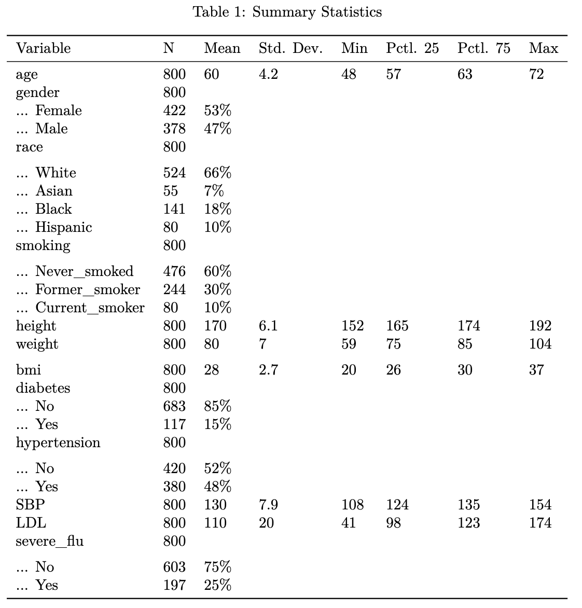
vtable::sumtable(train_sf, out = "kable")The set of boxplots below compares the distribution of continuous predictors across individuals with and without severe flu. Most predictors (like age, BMI, and weight) show similar distributions between the two groups.
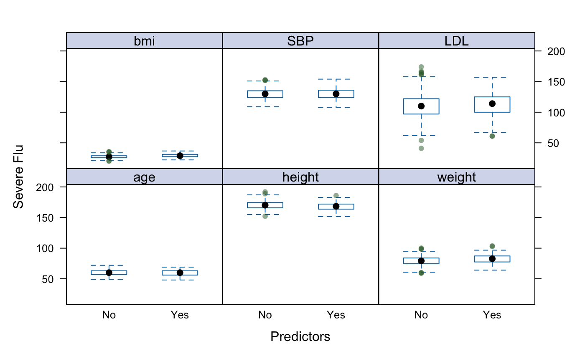
# continuous predictors
cont_vars = train_sf %>% dplyr::select(-where(is.factor), -severe_flu)
theme1 <- trellis.par.get()
theme1$plot.symbol$col <- rgb(.2, .4, .2, .5)
theme1$plot.symbol$pch <- 16
theme1$plot.line$col <- rgb(.8, .1, .1, 1)
theme1$plot.line$lwd <- 2
theme1$strip.background$col <- rgb(.0, .2, .6, .2)
trellis.par.set(theme1)
# feature plot - box plot
cont_plot = featurePlot(x = cont_vars,
y = train_sf$severe_flu,
plot = "box",
span = .5,
labels = c("Predictors","Severe Flu"),
layout = c(3, 2))The correlation plot shows pairwise Pearson correlations among continuous predictors of severe flu. Positive correlations (dark blue) appear between weight, BMI, and height, while a moderate negative correlation exists between BMI and height.
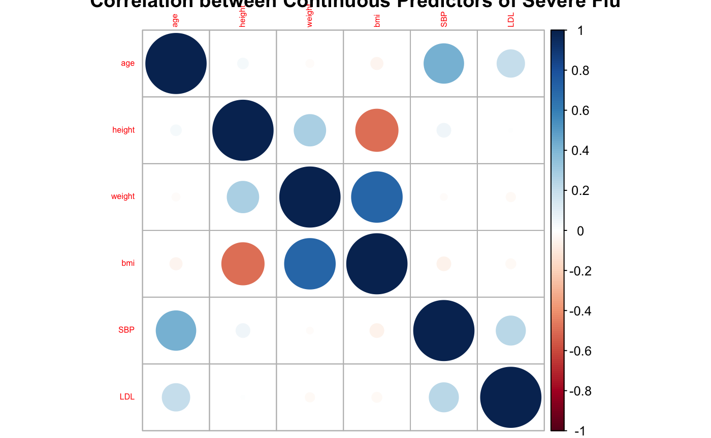
# Correlation matrix
corrplot(cor(cont_vars), method = "circle", type = "full", tl.cex = 0.5, title = "Correlation between Continuous Predictors of Severe Flu")The relative proportion of participants with severe flu is higher in those who have diabetes and who smoke. Hispanic participants also show a slightly higher incidence of severe flu than other groups.
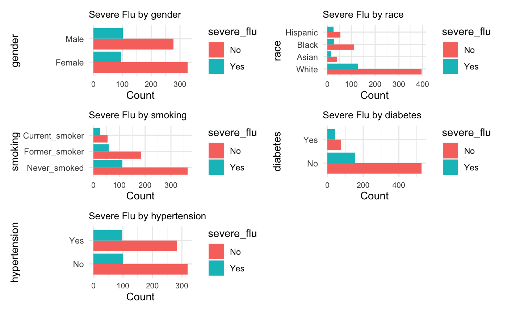
plot_list <- lapply(cat_columns, function(col) {
ggplot(train_sf, aes_string(x = col, fill = "severe_flu")) +
geom_bar(position = "dodge") +
labs(title = paste("Severe Flu by", col), x = col, y = "Count") +
theme_minimal() +
coord_flip() + # flip bars
theme(axis.text.x = element_text(size = 8),
plot.title = element_text(size = 10))
})
cat_plot <- wrap_plots(plot_list, ncol = 2) # fewer columns
print(cat_plot)
plot_list <- lapply(cat_columns, function(col) {
ggplot(train_sf, aes_string(x = col, fill = "severe_flu")) +
geom_bar(position = "fill") + # Proportion stacked
labs(title = paste("Severe Flu by", col),
x = col,
y = "Proportion") +
scale_y_continuous(labels = scales::percent_format(accuracy = 1)) +
scale_fill_manual(values = c("No" = "#F8766D", "Yes" = "#00BFC4")) +
theme_minimal() +
theme(axis.text.x = element_text(angle = 30, hjust = 1, size = 9),
axis.text.y = element_text(size = 8),
plot.title = element_text(size = 10, face = "bold"))
})
cat_plot <- wrap_plots(plot_list, ncol = 2)Chi-square tests were also conducted to test for associations between categorical predictors, but no significant associations were found.
cat_vars <- train_sf %>% dplyr::select(where(is.factor), -severe_flu)
cat_columns <- colnames(cat_vars)
comparisons <- combn(cat_columns, 2, simplify = FALSE)
categorical_df <- cat_vars[, cat_columns] |>
drop_na()
chiseq_test <- lapply(comparisons, function(x){
categorical_df <- cat_vars |>
dplyr::select(x[1], x[2]) |>
drop_na()
res = chisq.test(table(categorical_df),
correct = TRUE) |>
broom::tidy() |>
mutate(group = paste(x[1], x[2], sep = ":"),
`p.value` = signif(`p.value`, 3),
statistic = round(statistic, 3))
return(res)
})
chiseq_test <- bind_rows(chiseq_test)
chiseq_test |>
dplyr::select(statistic, `p.value`, group) |>
arrange(`p.value`) |>
knitr::kable(caption = "Chi-Squared Test between Categorical Covariates")Nine models were trained: logistic, penalized logistic, MARS, GAM,
LDA, SVM (linear), SVM (radial), random forest, and boosted. The
evaluation metric of interest was ROC/AUC for both prediction accuracy
and model comparison. 10-fold cross validation with 5 repeats was used
to tune model parameters. As noted previously, a seed of 2025 was used
for reproducibility. caret was used to train all
models.
set.seed(2025)
ctrl <- trainControl(method = "repeatedcv",
repeats = 5,
classProbs = TRUE,
# allowParallel = TRUE,
summaryFunction = twoClassSummary)Given that the response variable, severe_flu is binary,
the simplest suitable model to train was logistic regression. Logistic
regression assumes that the log-odds of the binary outcome are a linear
combination of the predictors, with independent observations and no
multicollinearity among predictors.
glm.logit <- train(severe_flu ~ .,
data = train_sf,
method = "glm",
metric = "ROC",
trControl = ctrl)
# Step 1: Make predictions
glm.pred.prob <- predict(glm.logit, newdata = test_sf, type = "prob")[, "Yes"]
# Step 2: Convert probabilities to binary predictions using 0.5 cutoff
glm.pred <- rep("No", nrow(test_sf)) # default to negative class
glm.pred[glm.pred.prob > 0.5] <- "Yes"
# Step 3: Generate confusion matrix
confusionMatrix(
data = factor(glm.pred, levels = c("No", "Yes")),
reference = test_sf$severe_flu,
positive = "Yes"
)Penalized logistic regression makes the same core assumptions as standard logistic regression—linearity of the log-odds, independent observations, and correctly specified model structure—but it is more robust to multicollinearity and helps prevent overfitting in high-dimensional settings. After tuning the parameters, the final PLR model had alpha = 0.0526 and lambda = 2.0427.
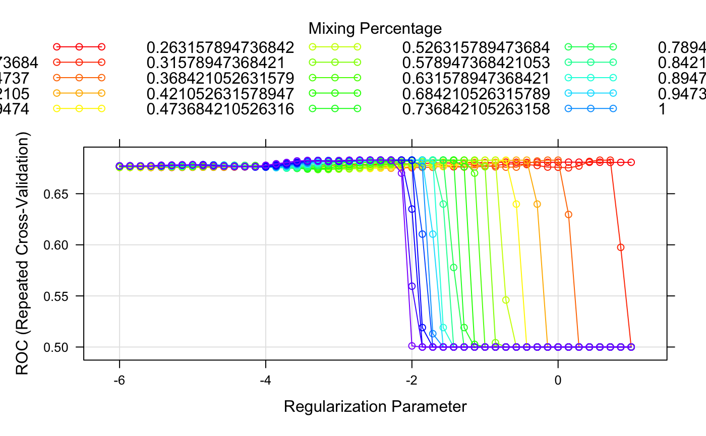
glmnGrid <- expand.grid(.alpha = seq(0, 1, length = 20),
.lambda = exp(seq(-6, 1, length = 50)))
model.glmn <- train(severe_flu ~ .,
data = train_sf,
method = "glmnet",
tuneGrid = glmnGrid,
metric = "ROC",
preProcess = c("center", "scale", "zv"),
trControl = ctrl)
# display best tuning parameters
model.glmn$bestTune
myCol <- rainbow(25)
myPar <- list(superpose.symbol = list(col = myCol),
superpose.line = list(col = myCol))
# ggplot(model.glmn, highlight = TRUE)
plot(model.glmn, par.settings = myPar, xTrans = function(x) log(x))
# Step 1: Predict probabilities on test data
glmn.pred.prob <- predict(model.glmn, newdata = test_sf, type = "prob")
# Step 2: Convert probabilities to binary predictions using 0.5 cutoff
glmn.pred <- rep("No", nrow(test_sf)) # default to negative class
glmn.pred[glmn.pred.prob[ , "Yes"] > 0.5] <- "Yes" # adjust column name if needed
# Step 3: Generate confusion matrix
confusionMatrix(
data = as.factor(glmn.pred),
reference = test_sf$severe_flu,
positive = "Yes"
)
# ROC
roc.glmn = roc(test_sf$severe_flu, glmn.pred.prob[,2])
plot(roc.glmn, legacy.axes = TRUE, print.auc = TRUE)The most important variables from this model were BMI and diabetes (Yes).
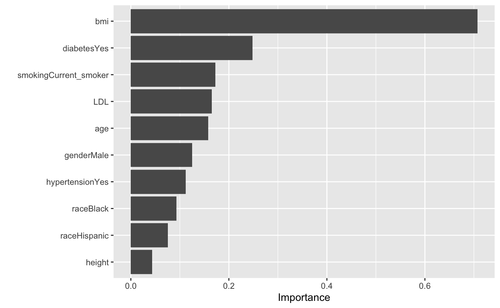
vip::vip(model.glmn$finalModel)A MARS model was also tuned using repeated cross-validation to maximize ROC. The optimal configuration selected was a degree-1 model with 3 terms, indicating that the best performance was achieved using only main effects without interaction terms.
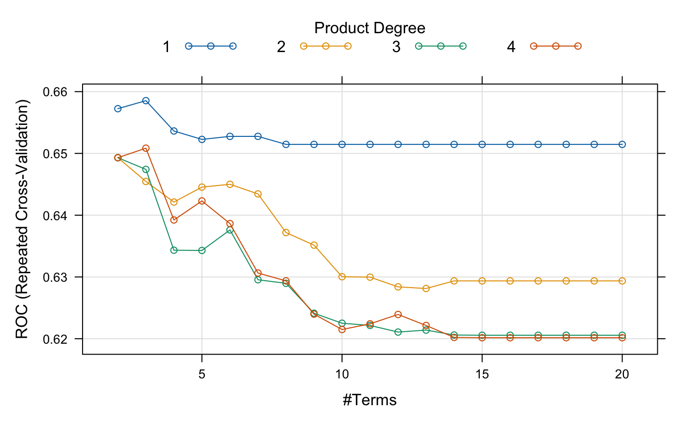
mars.grid = expand.grid(degree = 1:4,
nprune = 2:20)
model.mars <- train(severe_flu ~ .,
data = train_sf,
method = "earth",
tuneGrid = mars.grid,
metric = "ROC",
trControl = ctrl)
plot(model.mars)
model.mars$bestTune
coef(model.mars$finalModel)
vip::vip(model.mars$finalModel)As shown in the ROC tuning plot, higher-degree models (including interactions) generally under performed and led to reduced predictive accuracy. The variable importance plot highlights BMI and diabetes status as the most influential predictors in the final model, with BMI contributing most significantly to the prediction of severe flu outcomes. Other predictors, including smoking status and race, contributed marginally, while age, gender, and height had negligible impact.
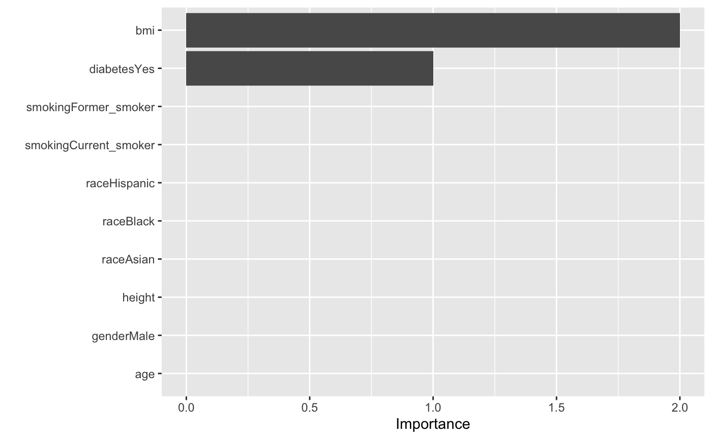
mars.pred.prob = predict(model.mars, newdata = test_sf, type = "prob")
mars.pred = ifelse(mars.pred.prob[ , "Yes"] > 0.5, "Yes", "No")
confusionMatrix(
data = factor(mars.pred, levels = c("No", "Yes")),
reference = test_sf$severe_flu,
positive = "Yes"
)
# ROC
roc.mars = roc(test_sf$severe_flu, mars.pred.prob[,2])
plot(roc.mars, legacy.axes = TRUE, print.auc = TRUE)GAM used a binomial family with a logit link to model severe flu as a function of both linear and smooth (nonlinear) predictors. Smooth terms were applied to continuous variables such as age, SBP, LDL, BMI, height, and weight, where age, LDL, and BMI had the greatest nonlinearity. In contrast, SBP, height, and weight had near-zero EDFs, indicating little to no added flexibility over a linear effect.
model.gam <- train(severe_flu ~ .,
data = train_sf,
method = "gam",
metric = "ROC",
trControl = ctrl)
model.gam$finalModel
plot(model.gam$finalModel)
# Prediction
gam.pred.prob = predict(model.gam, newdata = test_sf, type = "prob")
gam.pred = ifelse(gam.pred.prob[ , "Yes"] > 0.5, "Yes", "No")
confusionMatrix(
data = factor(gam.pred, levels = c("No", "Yes")),
reference = test_sf$severe_flu,
positive = "Yes"
)
# ROC
roc.gam = roc(test_sf$severe_flu, gam.pred.prob[,2])
plot(roc.gam, legacy.axes = TRUE, print.auc = TRUE)LDA (Linear Discriminant Analysis) assumes normally distributed predictors with equal covariance matrices across outcome classes. It finds a linear combination of features that best separates the classes, making it efficient and interpretable, but potentially limited when these assumptions are violated or when classes are not linearly separable.
model.lda <- train(severe_flu ~ .,
data = train_sf,
method = "lda",
metric = "ROC",
trControl = ctrl)
# Step 1: Predict probabilities on test data
lda.pred.prob <- predict(model.lda, newdata = test_sf, type = "prob")
# Step 2: Convert probabilities to binary predictions using 0.5 cutoff
lda.pred <- rep("No", nrow(test_sf)) # default to negative class
lda.pred[lda.pred.prob[ , "Yes"] > 0.5] <- "Yes" # adjust column name if needed
# Step 3: Generate confusion matrix
confusionMatrix(
data = as.factor(lda.pred),
reference = test_sf$severe_flu,
positive = "Yes"
)
# ROC
roc.lda = roc(test_sf$severe_flu, lda.pred.prob[,2])
plot(roc.lda, legacy.axes = TRUE, print.auc = TRUE)Linear SVM defines a linear boundary that separates the outcome values (severe flu vs. not severe). It assumes the relationship between predictors and the outcome is linear and can be sensitive to outliers without proper regularization.
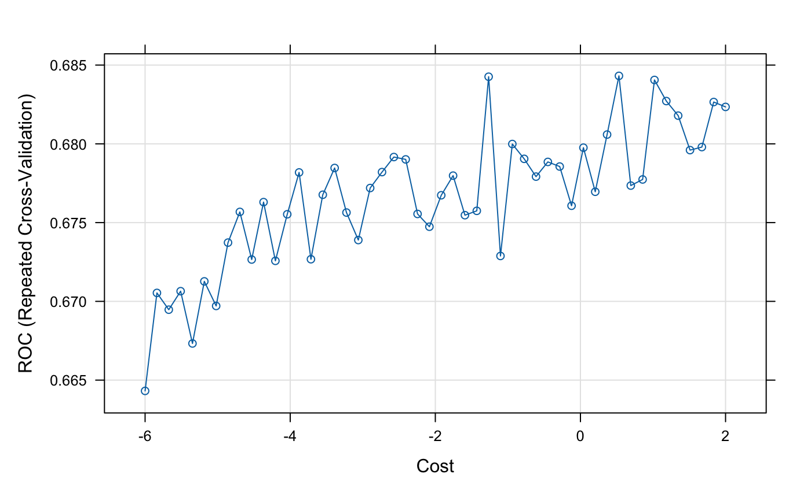
svml.fit <- train(severe_flu ~ . ,
data = train_sf,
method = "svmLinear",
tuneGrid = data.frame(C = exp(seq(-8, 2, len = 20))),
preProcess = c("center", "scale", "zv"),
trControl = ctrl)
plot(svml.fit, highlight = TRUE, xTrans = log)
svml.fit$bestTune
# Prediction
svml.pred.prob = predict(svml.fit, newdata = test_sf, type = "prob")
svml.pred = ifelse(svml.pred.prob[ , "Yes"] > 0.5, "Yes", "No")
confusionMatrix(
data = factor(svml.pred, levels = c("No", "Yes")),
reference = test_sf$severe_flu,
positive = "Yes"
)
# ROC
roc.svml = roc(test_sf$severe_flu, svml.pred.prob[,2])
plot(roc.svml, legacy.axes = TRUE, print.auc = TRUE)The final cost parameter after cross validation was 1.524.
The SVM using a radial kernel uses a non-linear boundary to separate the classes (severe vs. not severe). It assumes the data should be separable, similar to the linear boundary SVM.
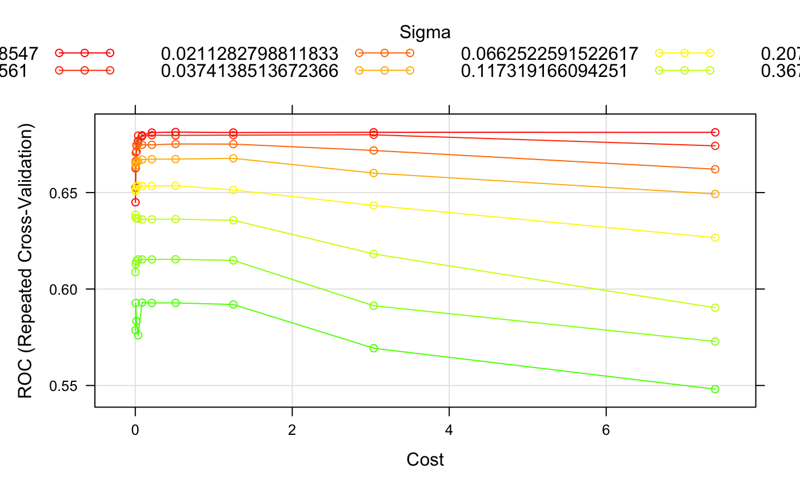
svmr.grid <- expand.grid(C = exp(seq(-6, 2, len = 10)),
sigma = exp(seq(-8, -1, len = 8)))
svmr.fit <- train(severe_flu ~ .,
data = train_sf,
method = "svmRadialSigma",
tuneGrid = svmr.grid,
preProcess = c("center", "scale", "zv"),
trControl = ctrl)
svmr.fit$bestTune
myCol <- rainbow(25)
myPar <- list(superpose.symbol = list(col = myCol),
superpose.line = list(col = myCol))
plot(svmr.fit, highlight = TRUE, par.settings = myPar)
plot(svmr.fit, transform.y = log, transform.x = log,
color.palette = terrain.colors)
vip::vip(svmr.fit$finalModel)
# Prediction
svmr.pred.prob = predict(svmr.fit, newdata = test_sf, type = "prob")
svmr.pred = ifelse(svmr.pred.prob[ , "Yes"] > 0.5, "Yes", "No")
confusionMatrix(
data = factor(svmr.pred, levels = c("No", "Yes")),
reference = test_sf$severe_flu,
positive = "Yes"
)
# ROC
roc.svmr = roc(test_sf$severe_flu, svmr.pred.prob[,2])
plot(roc.svmr, legacy.axes = TRUE, print.auc = TRUE)After CV, the optimal tuning parameter for cost was 1.25 and the optimal sigma was 0.00248.
Random forest is another classifier that builds decision trees during training and outputs the class that most decision trees agree with. After CV, we found that the optimal tuning parameters was 1 predictor out of 11 and a minimum node size of 3.
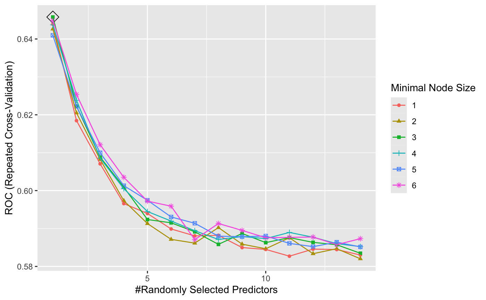
rf.grid <- expand.grid(mtry = 1:14,
splitrule = "gini",
min.node.size = 1:6)
rf.fit <- train(severe_flu ~ . ,
train_sf,
method = "ranger",
tuneGrid = rf.grid,
metric = "ROC",
trControl = ctrl)
ggplot(rf.fit, highlight = TRUE)
# Prediction
rf.pred.prob = predict(rf.fit, newdata = test_sf, type = "prob")
rf.pred = ifelse(rf.pred.prob[ , "Yes"] > 0.5, "Yes", "No")
confusionMatrix(
data = factor(rf.pred, levels = c("No", "Yes")),
reference = test_sf$severe_flu,
positive = "Yes"
)
# ROC
roc.rf = roc(test_sf$severe_flu, rf.pred.prob[,2])
plot(roc.rf, legacy.axes = TRUE, print.auc = TRUE)Adaptive boosting is an ensemble method that works by iteratively reweighting observations. It focusing more on misclassified cases in each round so that subsequent models improve where earlier ones performed poorly.
After cross validation, the optimal parameters were n.trees = 500 (grid from 500 to 5,000), interactions = 1 (1-6), shrinkage = 0.001 (0.001-0.005), min observations in node = 10 (10+).
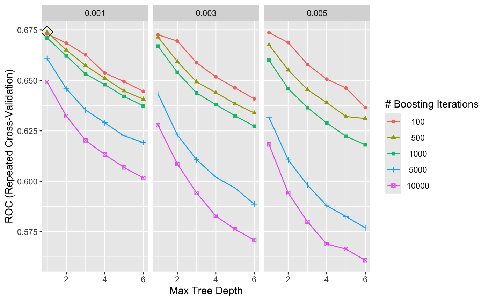
gbmA.grid <- expand.grid(n.trees = c(100,500,1000,5000,10000),
interaction.depth = 1:6,
shrinkage = c(0.001, 0.003, 0.005),
n.minobsinnode = 10)
gbmA.fit <- train(severe_flu ~ . ,
data = train_sf,
tuneGrid = gbmA.grid,
trControl = ctrl,
method = "gbm",
distribution = "adaboost",
metric = "ROC",
verbose = FALSE)
ggplot(gbmA.fit, highlight = TRUE)
gbmA.fit$bestTune
summary(gbmA.fit$finalModel, las = 2, cBars = 7, cex.names = 0.6)
# Prediction
gbmA.pred = predict(gbmA.fit, newdata = test_sf)
confusionMatrix(data = factor(gbmA.pred, levels = c("No", "Yes")),
reference = test_sf$severe_flu,
positive = "Yes")After training these models, resampling was done to compare the nine to each other to determine the best performing model. The test performance was compared based on ROC values. Below is a boxplot showing the comparative ROC values.
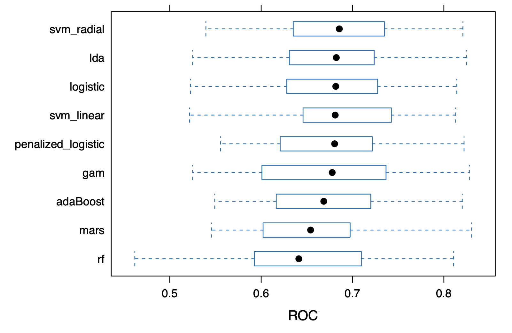
res = resamples(
list(
logistic = glm.logit,
penalized_logistic = model.glmn,
mars = model.mars,
gam = model.gam,
lda = model.lda,
svm_linear = svml.fit,
svm_radial = svmr.fit,
rf = rf.fit,
adaBoost = gbmA.fit
)
)
summary(res)
bwplot(res, metric = "ROC")The boxplot shows that the best performing models (by ROC) were the radial kernel SVM, but there were four models that performed very similarly to that. Given the smaller length of the boxplot for the SVM with a radial kernel, we can proceed to evaluate this model, since that likely means that there was similar performance across the folds of CV. The radial SVM had a mean ROC AUC of 0.6856 and a median ROC AUC of 0.6828. This means that the radial SVM had a moderate ability to distinguish between participants with and without severe flu. Given that the median and mean ROC AUCs were close together, that would mean that that the model’s performance was consistent across cross-validation folds, with little variation between the best and worst cases.
Based on the results from the model ROC comparison, the final model chosen for this study is the radial SVM. The most important variable here, as with many of the other models, was BMI, followed by weight and height. Compared to other models, it was surprising to see that diabetes did not have as strong of an effect as it did elsewhere.
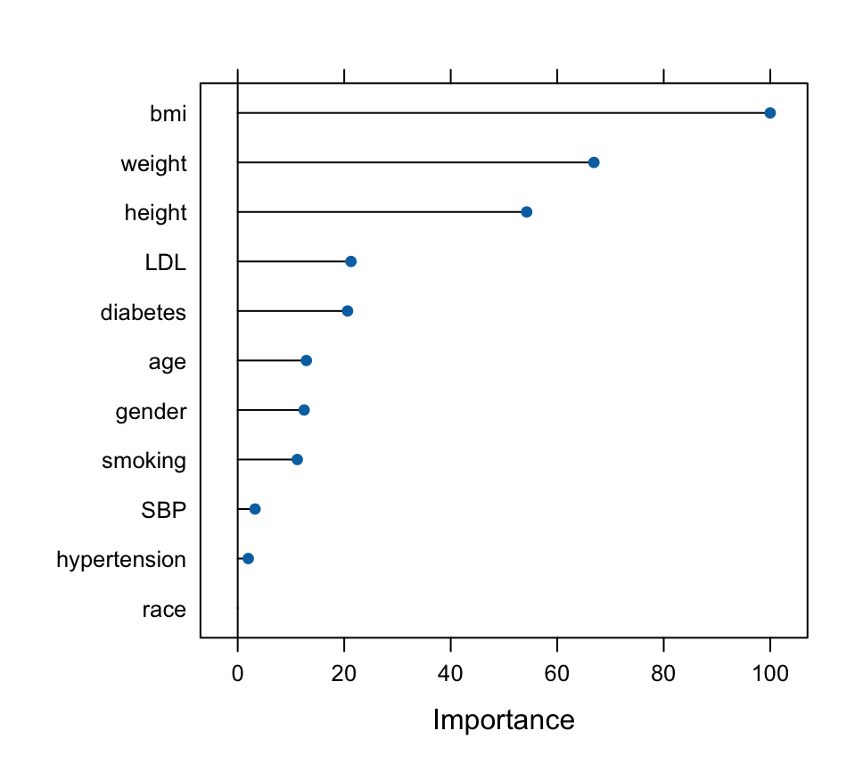
The predictive performance of this model was determined by computing the confusion matrix. The accuracy of this model was 0.75, meaning that 75% of cases were classified correctly in the test data. The Kappa value, 0.2488, indicated fair agreement between the model’s predictions and the actual outcomes, after adjusting for chance. Across all models, it had the highest sensitivity on the test data of 0.2679 and had a specificity of 0.9375. The AUC graph below shows a fairly balanced trade-off between recognizing severe vs. non-severe cases of the flu.
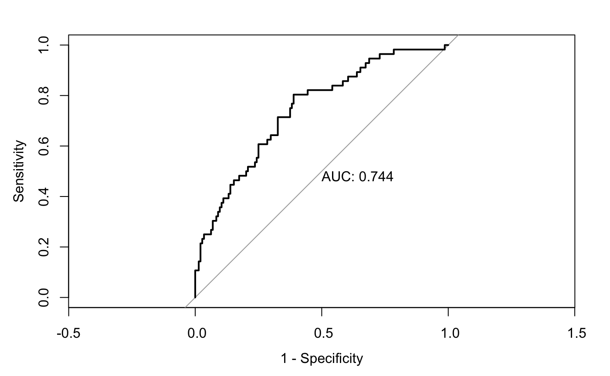
Overall, the radial SVM performed pretty well on the test set in terms of accuracy, but that may be because of the imbalance of sensitivity vs. specificity. Since the model was very good at determining the non-severe cases, but not as good at deciding severe cases, the AUC and balanced accuracy were not necessarily very high. More tuning of the grid or parameters may be necessary to decide the final performance. Given the fact that slightly simpler models also performed similarly (as seen in the ROC boxplots), depending on the needs of the researchers, it may be better to use and interpret one of those models. The interpretability of the model itself is more difficult for the radial SVM compared to the LDA or logistic, which is a notable limitation of this model.